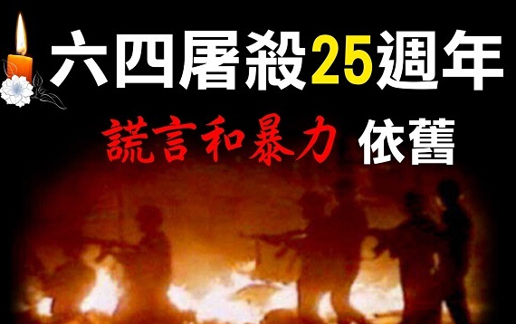
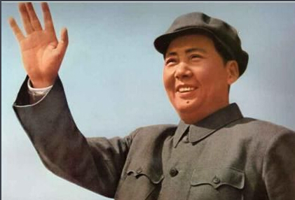
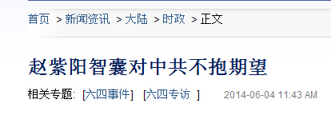
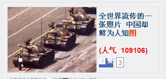
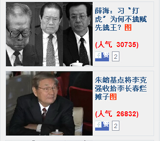
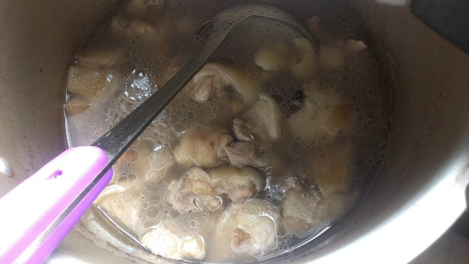
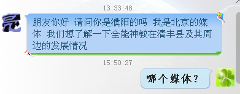
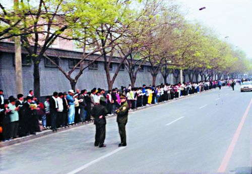

Conversation with 81184027 at Wed 04 Jun 2014 03:01:35 PM CST on 154115835 (webqq)
(03:02:26 PM) 蔚蓝的天空: 女人没本事才说男人花心
(02:58:38 PM) 福建-福州&水浒: 在1989年之后出生的人当中，完全无知。。。哎，不娶89年以后的老婆
(02:58:39 PM) 蔚蓝的天空: 毛泽东时代公务人员普遍的廉洁奉公，贪污、盗窃、铺张浪费是最大的犯罪，被国际组织评为最廉洁，称强于世界
(02:58:52 PM) 阿萨汗蛋包飯: 坚决不娶89年以后的老婆
(02:58:53 PM) 福建-福州&水浒: 为什么不娶
(02:59:12 PM) 福建-福州&水浒: 那现在的女朋友是
(02:59:15 PM) 蔚蓝的天空: 南京长江大桥 · 长沙湘江大桥 · 北镇黄河大桥 · 前扶松花江大桥 · 兰江大桥 · 蚌埠新淮河大桥 · 上海黄浦江大桥 · 闽青大桥 · 洛阳黄河大桥 · 田庄台辽河大桥 · 淮南大桥 · 五河淮河大桥 · 重庆长江大桥 · 成昆铁路 · 湘黔铁路 · 焦枝铁路 · 川黔铁路 · 襄渝铁路 · 贵昆铁路 · 京原铁路 · 汉丹铁路 · 宝成铁路 · 枝柳铁路 · 京通铁路 · 阳安铁路 · 滇藏公路 · 韶山至井冈山公路 · 北京地铁 · 中国民航航线 · 全国港口建设三年规划 · 打通南北航线
(02:59:18 PM) 阿萨汗蛋包飯: 接触过，对金钱很看重
(02:59:26 PM) 福建-福州&水浒: :face55:
(02:59:49 PM) 蔚蓝的天空: 擦 现在还有对金钱不看重的吗
(02:59:52 PM) 福建-福州&水浒: 看来也被洗脑深啊
(03:00:08 PM) 阿萨汗蛋包飯: 对钱的看重超过一切
(03:00:18 PM) 福建-福州&水浒: 一切向钱进
(03:00:30 PM) 蔚蓝的天空: 刘家峡水电站 · 红旗渠 · 葛洲坝水利枢纽工程 · 根治海河 · 华北地区打机井 · 农田基本建设 · 丹江口水电站 · 龚咀水电站 · 黄龙滩水电站 · 碧口水电站 · 八盘峡水电站 · 唐山陡河发电厂 · 山东莱芜火力发电厂 · 三门峡水利枢纽工程改建 · 小水泥---毛时代的建设
(03:00:33 PM) 福建-福州&水浒: 还好我爱人不太注重金钱
(03:00:39 PM) 阿萨汗蛋包飯: 钱比什么都重要！为了钱，诚信，道德，伦理全部丧失了
(03:00:47 PM) 福建-福州&水浒: 她很节省，
(03:01:09 PM) 阿萨汗蛋包飯: 1989年以后出生的这一代人，非常会花钱！她们认为：钱比什么都重要！为了钱，诚信，道德，伦理全部丧失了
(03:01:18 PM) 福建-福州&水浒: 没有太追求金钱
(03:01:24 PM) 潮哥: :face13:
(03:02:13 PM) 蔚蓝的天空: 男人没本事才说女人现实
(03:02:26 PM) 蔚蓝的天空: 女人没本事才说男人花心
(03:02:26 PM) 蔚蓝的天空: 女人没本事才说男人花心
(02:58:38 PM) 福建-福州&水浒: 在1989年之后出生的人当中，完全无知。。。哎，不娶89年以后的老婆
(02:58:39 PM) 蔚蓝的天空: 毛泽东时代公务人员普遍的廉洁奉公，贪污、盗窃、铺张浪费是最大的犯罪，被国际组织评为最廉洁，称强于世界
(02:58:52 PM) 阿萨汗蛋包飯: 坚决不娶89年以后的老婆
(02:58:53 PM) 福建-福州&水浒: 为什么不娶
(02:59:12 PM) 福建-福州&水浒: 那现在的女朋友是
(02:59:15 PM) 蔚蓝的天空: 南京长江大桥 · 长沙湘江大桥 · 北镇黄河大桥 · 前扶松花江大桥 · 兰江大桥 · 蚌埠新淮河大桥 · 上海黄浦江大桥 · 闽青大桥 · 洛阳黄河大桥 · 田庄台辽河大桥 · 淮南大桥 · 五河淮河大桥 · 重庆长江大桥 · 成昆铁路 · 湘黔铁路 · 焦枝铁路 · 川黔铁路 · 襄渝铁路 · 贵昆铁路 · 京原铁路 · 汉丹铁路 · 宝成铁路 · 枝柳铁路 · 京通铁路 · 阳安铁路 · 滇藏公路 · 韶山至井冈山公路 · 北京地铁 · 中国民航航线 · 全国港口建设三年规划 · 打通南北航线
(02:59:18 PM) 阿萨汗蛋包飯: 接触过，对金钱很看重
(02:59:26 PM) 福建-福州&水浒: :face55:
(02:59:49 PM) 蔚蓝的天空: 擦 现在还有对金钱不看重的吗
(02:59:52 PM) 福建-福州&水浒: 看来也被洗脑深啊
(03:00:08 PM) 阿萨汗蛋包飯: 对钱的看重超过一切
(03:00:18 PM) 福建-福州&水浒: 一切向钱进
(03:00:30 PM) 蔚蓝的天空: 刘家峡水电站 · 红旗渠 · 葛洲坝水利枢纽工程 · 根治海河 · 华北地区打机井 · 农田基本建设 · 丹江口水电站 · 龚咀水电站 · 黄龙滩水电站 · 碧口水电站 · 八盘峡水电站 · 唐山陡河发电厂 · 山东莱芜火力发电厂 · 三门峡水利枢纽工程改建 · 小水泥---毛时代的建设
(03:00:33 PM) 福建-福州&水浒: 还好我爱人不太注重金钱
(03:00:39 PM) 阿萨汗蛋包飯: 钱比什么都重要！为了钱，诚信，道德，伦理全部丧失了
(03:00:47 PM) 福建-福州&水浒: 她很节省，
(03:01:09 PM) 阿萨汗蛋包飯: 1989年以后出生的这一代人，非常会花钱！她们认为：钱比什么都重要！为了钱，诚信，道德，伦理全部丧失了
(03:01:18 PM) 福建-福州&水浒: 没有太追求金钱
(03:01:24 PM) 潮哥: :face13:
(03:02:13 PM) 蔚蓝的天空: 男人没本事才说女人现实
(03:02:26 PM) 蔚蓝的天空: 女人没本事才说男人花心
(03:02:32 PM) 蔚蓝的天空: :face13:
(03:02:36 PM) 潮哥: 傻逼五毛
(03:03:21 PM) 福建-福州&水浒: :face13:
(03:03:31 PM) 阿萨汗蛋包飯: 
(03:03:38 PM) 潮哥: 恶心的慌
(03:03:51 PM) 蔚蓝的天空: 
(03:04:21 PM) 福建-福州&水浒: 毛贼东
(03:04:38 PM) 福建-福州&水浒: :face13:
(03:04:45 PM) 阿萨汗蛋包飯: 
(03:04:51 PM) 潮哥: 蟊贼洞
(03:05:15 PM) 福建-福州&水浒: :face57::face73:
(03:05:33 PM) 蔚蓝的天空:
(03:05:39 PM) 阿萨汗蛋包飯: 六四邓小平镇压给了个结论就是：‘只能用我这个看法，不能用你的看法’。〞
(03:06:15 PM) 阿萨汗蛋包飯: 据《维基解密》资料，赵紫阳1989年因为六四事件下台后，其大部分亲信或者同情其遭遇的改革派精英受到中共当局的清洗，这种清洗包括降职、撤职或判刑。
(03:06:23 PM) 蔚蓝的天空: 六四不过是镇压打砸抢烧的暴徒
(03:07:01 PM) 福建-福州&水浒: 五对负重～～
(03:06:59 PM) lost message from #134712 to #134712
(03:07:50 PM) 潮哥: 赵紫阳是郑州人
(03:07:46 PM) 蔚蓝的天空: 
(03:09:41 PM) 阿萨汗蛋包飯: 今天翻墙挺成功的，居然听到了境外媒体的声音:face13:
(03:10:06 PM) 潮哥: 恭喜，发来看看
(03:10:09 PM) 福建-福州&水浒: 我昨晚翻也总是老掉线
(03:10:25 PM) 阿萨汗蛋包飯: 在1989年的天安门学生运动中，有三名来自湖南的年轻人，在八九年的5月23日，向悬挂在天安门城楼上的巨幅毛泽东画像，投掷了二十几枚内装颜料的鸡蛋。两个半月后，北京市中级法院以反革命罪判处这三位年轻人，两人分别被判20年、和16年，另一人无期。
(03:10:41 PM) 福建-福州&水浒: 你接的是那个代理
(03:11:31 PM) 潮哥: 什么醉
(03:11:34 PM) 阿萨汗蛋包飯: 我用的是美国代理
(03:11:39 PM) 福建-福州&水浒: 反革命罪
(03:11:43 PM) 福建-福州&水浒: :face13:
(03:12:07 PM) 蔚蓝的天空: 打砸抢烧的暴徒
(03:12:14 PM) 山东-青岛&昆吾: 五对负重轮！
(03:12:23 PM) 阿萨汗蛋包飯:
(03:12:33 PM) 蔚蓝的天空: 镇压效国明显
(03:12:57 PM) lost message from #134727 to #134729
(03:13:37 PM) 蔚蓝的天空: 呵呵
(03:13:06 PM) 福建-福州&水浒: :gun:
(03:13:09 PM) 阿萨汗蛋包飯: 
(03:13:23 PM) 阿萨汗蛋包飯:
(03:13:41 PM) 阿萨汗蛋包飯:
(03:14:56 PM) 阿萨汗蛋包飯: 
(03:15:39 PM) 阿萨汗蛋包飯: 在中国很难找到有关六四的相关资料。记者尝试着用中国的〝百度〞互联网搜索〝六四事件〞，只显示出几条结果。其中有一条是官方媒体的报道，说当时北京有犯罪分子抢商店，但没有说政府作出了怎样的反应。
(03:17:25 PM) 蔚蓝的天空: 暴徒
(03:17:26 PM) 阿萨汗蛋包飯: 不仅年轻人，整个中国社会现在关心政治的人越来越少，更多的人关心的是房价和挣钱。
(03:17:38 PM) 蔚蓝的天空: 呵呵
(03:17:55 PM) 蔚蓝的天空: 因为现在都现实
(03:18:06 PM) 阿萨汗蛋包飯: 房价和钱是当下年轻人最关心的
(03:18:08 PM) 蔚蓝的天空: 关心政治 没用
(03:18:12 PM) 阿萨汗蛋包飯: 此外都是扯谈
(03:18:32 PM) 蔚蓝的天空: 本群的人不是都挺关心政治的吗
(03:20:01 PM) 阿萨汗蛋包飯: 这是非常少有的，因为本群会翻墙
(03:19:16 PM) 光: 本书告诉我们的另一个有趣的现象就是，在当代中国，民营企业家代 替传统社会里的乡绅阶层，成为基层民众的代言人，以及他们与政府之间的桥梁。浙江村的社区领导者们正是属于这样的群体。传统社会里的乡绅阶层由于都参加过 科举考试，熟读儒家经典，使得他们在维持基层社会秩序的时候，也成为传统道德伦理的布道人和号召者。与之相比，民营企业家并不具备道德伦理上的天然感召 力，他们之所以成为基层领袖，完全是因为他们的经济地位所致。而以金钱为工具理性的他们，完全有可能为了巨大的经济收益，做出各种违背道德伦理的行为。在 他们的感召和影响下，这种工具理性可能会传播给每一个基层平民。这或许也能在一定程度上解释当今社会为什么会出现道德滑坡。
(03:20:13 PM) 阿萨汗蛋包飯: 不会翻墙的是被洗脑了！
(03:19:24 PM) 光: http://book.douban.com/review/6686758/
(03:20:19 PM) 蔚蓝的天空:
(03:19:39 PM) 光: 以金钱为工具理性的他们，完全有可能为了巨大的经济收益，做出各种违背道德伦理的行为。在 他们的感召和影响下，这种工具理性可能会传播给每一个基层平民。这或许也能在一定程度上解释当今社会为什么会出现道德滑坡。
(03:20:51 PM) 阿萨汗蛋包飯: 听不到境外媒体的声音，只能听到中共的声音。翻墙其实不难，一翻就过去了
(03:29:30 PM) 阿萨汗蛋包飯: 道德滑坡是很明显的，城市里家家户户阳台上的防盗栅，防邻居像防贼一样。现在的商品房邻居彼此不认识，老死不相往来
(03:29:35 PM) 福建-福州&水浒: 今天不吃肉，偏偏煮饭的人买了一锅肉，
(03:29:57 PM) 福建-福州&水浒: 我还是没吃:)
(03:30:26 PM) 蔚蓝的天空: 15:29:30
阿萨汗蛋包飯
2014/6/4 15:29:30
道德滑坡是很明显的，城市里家家户户阳台上的防盗栅，防邻居像防贼一样。现在的商品房邻居彼此不认识，老死不相往来
(03:30:13 PM) lost message from #134753 to #134753
(03:31:04 PM) 阿萨汗蛋包飯: 香菇排骨汤:强:
(03:30:36 PM) 福建-福州&水浒: 
(03:31:54 PM) 福建-福州&水浒: 我自己煮了面条，放点青菜
(03:32:05 PM) 蔚蓝的天空: 某公职人员欲退出“全能神” 被信徒打断腿-搜狐新闻
http://news.sohu.com/20140604/n400413896.shtml
(03:32:48 PM) 阿萨汗蛋包飯: 这也太夸张，我怎么没被打断腿:D
(03:33:10 PM) 蔚蓝的天空: 邪教组织“全能神”成员制造了山东招远故意杀人案，新华社记者了解到，“全能神”近年也渗透到台湾。案件发生后，岛内基督教界强烈呼吁台湾民众认清邪教面目，并希望两岸建立沟通平台，共同打击这一邪教组织。
(03:33:17 PM) 福建-福州&水浒: 舆论导向
(03:33:20 PM) 福建-福州&水浒: 可以理解
(03:33:30 PM) 蔚蓝的天空: 台湾受害最严重的地区是桃园县
(03:33:46 PM) 蔚蓝的天空: 从2012年起，“全能神”邪教组织不仅开始在街头设点，还在台湾报纸、电视上大做广告宣传，诱骗台湾民众入教。在招远凶案发生后，他们还在主流媒体刊登大幅广告，混淆视听。据估算，“全能神”邪教组织仅在台湾报纸上投放的广告费就超过1亿元新台币
(03:33:54 PM) 蔚蓝的天空: :D
(03:33:55 PM) 阿萨汗蛋包飯: 台湾人信的也很多
(03:34:09 PM) 蔚蓝的天空: 台湾不是民主吗
(03:34:16 PM) 阿萨汗蛋包飯: 马英九怎么说？
(03:34:20 PM) 蔚蓝的天空: 原来民主也信邪教
(03:34:29 PM) 阿萨汗蛋包飯: 这个在大陆不能登报
(03:34:45 PM) 阿萨汗蛋包飯: 在主流媒体刊登大幅广告---这个大陆不行
(03:39:02 PM) 蔚蓝的天空: 2012年底，据大陆媒体报道，众多全能神教会人员因惧怕世界末日自杀。
(03:39:06 PM) 福建-福州&水浒: 中共看来希望想得到台湾媒体呼应，却不知道台湾基督长老会早已经以电台的方式告知信众了～
(03:39:39 PM) 福建-福州&水浒: 别个前十年就已经做了
(03:39:57 PM) 福建-福州&水浒: 政府2012年才公开
(03:39:58 PM) 蔚蓝的天空: 该教派认为犹太及基督教《圣经》已经过时
(03:40:01 PM) 阿萨汗蛋包飯: 台湾人受教育水平高
(03:40:01 PM) 福建-福州&水浒: 信息不流通啊
(03:40:07 PM) 阿萨汗蛋包飯: 台湾人素质会高些
(03:40:24 PM) 蔚蓝的天空: 该教认为当今中国大陆是一个没落的帝王大家庭，受大红龙（指中国共产党）支配，信徒要在神的率领下与大红龙展开决战，将大红龙灭绝，建立全能神统治的国度。
(03:40:50 PM) 阿萨汗蛋包飯: 大红龙（指中国共产党）:D
(03:40:56 PM) 福建-福州&水浒: :D
(03:41:00 PM) 阿萨汗蛋包飯: 好反动的教派。杀了
(03:41:22 PM) 阿萨汗蛋包飯: 向当年六四一样统统枪毙
(03:41:36 PM) 福建-福州&水浒: :!
(03:41:42 PM) 光: 懒惰和怯懦乃是何以有如此大量的人,当大自然早己把他们从外界的引导之下释放出来以后(naturaliter maiorennes）时,却仍然愿意终身处于不成熟状态之中,以及别人何以那么轻而易举地就俨然以他们的保护人自居的原因所在。处于不成熟状态是那么安 逸。如果我有一部书能替我有理解,有一位牧师能替我有良心,有一位医生能替我规定食谱,等等；那么我自己就用不着操心了。只要能对我合算,我就无需去思 想：自有别人会替我去做这类伤脑筋的事。
(03:42:44 PM) 蔚蓝的天空: 擦
(03:42:05 PM) 光: http://www.douban.com/group/topic/24100860/
(03:43:02 PM) 蔚蓝的天空: 全能神一个也跑不掉
(03:42:33 PM) lost message from #134788 to #134788
(03:43:22 PM) 蔚蓝的天空: 看全能神厉害 还是大红龙厉害
(03:43:20 PM) 山东-青岛&昆吾: @阿萨汗蛋包飯 你是公职人员么？:p
(03:43:36 PM) 蔚蓝的天空: :D
(03:44:01 PM) 蔚蓝的天空: 蛋包 本来全能像把你当骨干培养
(03:43:09 PM) 光: 启蒙运动就是人类脱离自己所加之于自己的不成熟状态，不成熟状态就是不经别人的引导，就对运用自己的理智无能为力。当其原因不在于缺乏理智,而在于不经别 人的引导就缺乏勇气与决心去加以运用时,那么这种不成熟状态就是自己所加之于自己的了。Sapere aude! 要有勇气运用你自己的理智！这就是启蒙运动的口号。
(03:44:15 PM) 福建-福州&水浒: 哇一个邪教居然能生存20多年
(03:44:33 PM) 福建-福州&水浒: 还是邪教组织牛逼些
(03:44:35 PM) 阿萨汗蛋包飯: 公职人员？！我可以隐瞒公职人员身份
(03:44:46 PM) 阿萨汗蛋包飯: 入教的时候没有填写工作单位
(03:46:28 PM) 山东-青岛&昆吾: 公职人员入教有惊喜么？
(03:46:37 PM) 阿萨汗蛋包飯:
(03:46:44 PM) 阿萨汗蛋包飯: 现在无法翻墙了:L
(03:46:52 PM) 阿萨汗蛋包飯: 翻个墙真累:L
(03:46:10 PM) 光: 群里有网特
(03:47:12 PM) 福建-福州&水浒: 网特？
(03:47:17 PM) 阿萨汗蛋包飯: 累啊。不翻墙了，:L
(03:46:30 PM) 光: 网络特工
(03:47:25 PM) 福建-福州&水浒: 网路特务？
(03:46:38 PM) 光: 差不多吧
(03:46:45 PM) 光: 第一时间封锁
(03:47:37 PM) 阿萨汗蛋包飯: 特工？？？咔咔。。。难怪
(03:47:41 PM) 阿萨汗蛋包飯: 现在无法翻墙了
(03:46:59 PM) 光: 级别还不低呢
(03:47:52 PM) 阿萨汗蛋包飯: 刚才还看得好好的。现在不行了
(03:47:54 PM) 福建-福州&水浒: 光哥厉害
(03:48:00 PM) 福建-福州&水浒: 破解他
(03:47:17 PM) 光: 人家背后是国家
(03:47:40 PM) 光: 倾一国之力谁搞的过
(03:48:49 PM) 阿萨汗蛋包飯: 那是！国家的力量忒强大了
(03:48:50 PM) 福建-福州&水浒: 谁叫你发五对付重，
(03:48:58 PM) 福建-福州&水浒: 忒强大了
(03:48:11 PM) 光: 以后低调分享了
(03:49:07 PM) 福建-福州&水浒: :D
(03:49:19 PM) 阿萨汗蛋包飯: 国家有武装力量，有政府部门，有。。。
(03:49:43 PM) 福建-福州&水浒: 咋不直接封群呀
(03:49:44 PM) 阿萨汗蛋包飯: 个人搞不过国家，不翻墙了，坚持四项基本原则:D
(03:49:04 PM) 光: 不晓得
(03:50:10 PM) 福建-福州&水浒: 他奶奶马勒戈壁的
(03:50:15 PM) 福建-福州&水浒: :L
(03:50:43 PM) 福建-福州&水浒: 我们算是潜在的反革命份子么
(03:49:52 PM) 光: 人家也是工作么
(03:49:58 PM) 光: 拿工资的
(03:50:52 PM) 福建-福州&水浒: 拿工资的
(03:50:03 PM) 光: 不要这样说人家
(03:50:58 PM) 福建-福州&水浒: 理解理解
(03:50:09 PM) 光: 嗯
(03:51:09 PM) 福建-福州&水浒: 对不起特工
(03:51:24 PM) 福建-福州&水浒: 生活也不容易
(03:51:30 PM) 福建-福州&水浒: 改天请你吃酒
(03:51:59 PM) 阿萨汗蛋包飯: 我爱党！坚持四项基本原则:D
(03:52:02 PM) 蔚蓝的天空: 派特工将赵教主击杀
(03:52:09 PM) 福建-福州&水浒: ～～～～
(03:52:49 PM) 蔚蓝的天空: 小小邪神还想颠覆我大红龙帝国
(03:52:52 PM) 阿萨汗蛋包飯: 赵教主在纽约啊，特工也无可奈何
(03:53:14 PM) 蔚蓝的天空: 特工可以潜伏到美国
(03:53:20 PM) 蔚蓝的天空: :D
(03:53:25 PM) 福建-福州&水浒: 是美国特工么
(03:53:54 PM) 蔚蓝的天空: 中统
(03:54:02 PM) 阿萨汗蛋包飯: 要美国才可以
(03:54:03 PM) 蔚蓝的天空: :D
(03:54:06 PM) 阿萨汗蛋包飯: 美国公民才可以
(03:54:35 PM) 福建-福州&水浒: 嗯
(03:54:45 PM) 福建-福州&水浒: 我看行
(03:56:48 PM) 憧憬￠未来: 
(03:57:24 PM) 阿萨汗蛋包飯: :$还有记者找你，挺吃香的
(03:57:39 PM) 福建-福州&水浒: :$
(03:57:42 PM) 憧憬￠未来: 挺郁闷的 应该找严寒呀
(03:57:52 PM) 阿萨汗蛋包飯: 呵呵呵，爆料啊
(03:57:54 PM) 憧憬￠未来: 可能只是想了解濮阳清丰这一带的
(03:58:11 PM) 蔚蓝的天空: 
(03:58:24 PM) 憧憬￠未来: ？
(03:59:53 PM) 阿萨汗蛋包飯: 我爱党！坚持四项基本原则:D
(03:59:57 PM) 福建-福州&水浒: 最近记者同志也比较忙啊
(04:00:07 PM) 阿萨汗蛋包飯: 记者要爆料啊，要不然怎么领工资
(04:00:15 PM) 福建-福州&水浒: 辛苦了
(04:01:19 PM) 阿萨汗蛋包飯: 立党为公，执政为民，我爱党！坚持四项基本原则:D
(04:01:21 PM) 蔚蓝的天空: 打击任何暴恐事件
(04:01:31 PM) 憧憬￠未来: 他说记者证在家。。
(04:01:42 PM) 福建-福州&水浒: 今个貌似特别安静，空气挺沉闷的
(04:01:45 PM) 蔚蓝的天空: 蛋包 识时务
(04:01:52 PM) 蔚蓝的天空: :D
(04:04:04 PM) 光: 然而公众要启蒙自己,却是很可能的;只要允许他们自由,这还确实几乎是无可避免的。因为哪怕是在为广大人群所设立的保护者们中间,也总会发见一些有独立思 想的人;他们自己在抛却了不成熟状态的羁绊之后,就会传播合理地估计自己的价值以及每个人的本分就在于思想其自身的那种精神。这里面特别值得注意的是:公 众本来是被他们套上了这种羁绊的,但当他们的保护者(其本身是不可能有任何启蒙的)中竟有一些人鼓动他们的时候,此后却强迫保护者们自身也处于其中了;种 下偏见是那么有害,因为他们终于报复了本来是他们的教唆者或者是他们教唆者的先行者的那些人。因而公众只能是很缓慢地获得启蒙。通过一场革命或许很可以实 现推翻个人专制以及贪婪心和权势欲的压迫,但却绝不能实现思想方式的真正改革;而新的偏见也正如旧的一样,将会成为驾驭缺少思想的广大人群的圈套。
(04:04:47 PM) 光: 通过一场革命或许很可以实 现推翻个人专制以及贪婪心和权势欲的压迫,但却绝不能实现思想方式的真正改革;而新的偏见也正如旧的一样,将会成为驾驭缺少思想的广大人群的圈套。
(04:06:33 PM) 光: 但是只有那位其本身是启蒙了的、不怕幽灵的而同时手中又掌握着训练精良的大量军队可以保障公共安宁的君主,才能够说出一个自由国家所不敢说的这种话:可以 争辩,随便争多少,随便争什么;但是必须听话。这就标志着人间事务的一种可惊异的、不能意料的进程;正犹如当我们对它从整体上加以观察时,其中就几乎一切 都是悖论那样。程度更大的公民自由仿佛是有利于人民精神的自由似的,然而它却设下了不可逾越的限度;反之,程度较小的公民自由却为每个人发挥自己的才能开 辟了余地。因为当大自然在这种坚硬的外壳之下打开了为她所极为精心照料着的幼芽时,也就是要求思想自由的倾向与任务时,它也就要逐步地反作用于人民的心灵 面貌(从而他们慢慢地就能掌握自由）；并且终于还会反作用于政权原则，使之发见按照人的尊严——人并不仅仅是机器而已——去看待人，也是有利于政权本身 的。